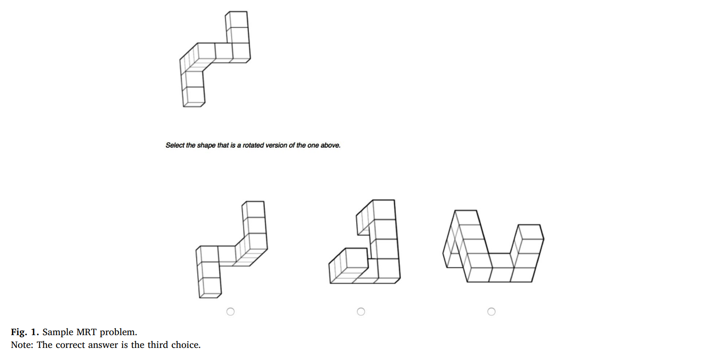

In this task, participants had 2.5 minutes to solve 8 "Mental Rotation Task" (MRT) questions.
Each MRT question included a shape that had to be mentally rotated and compared to 3 alternatives.
Below is an example MRT question:

Each correct answer gave one point.
How many more questions do you think men (women) answered correctly, compared to women (men)? [in percentage points].